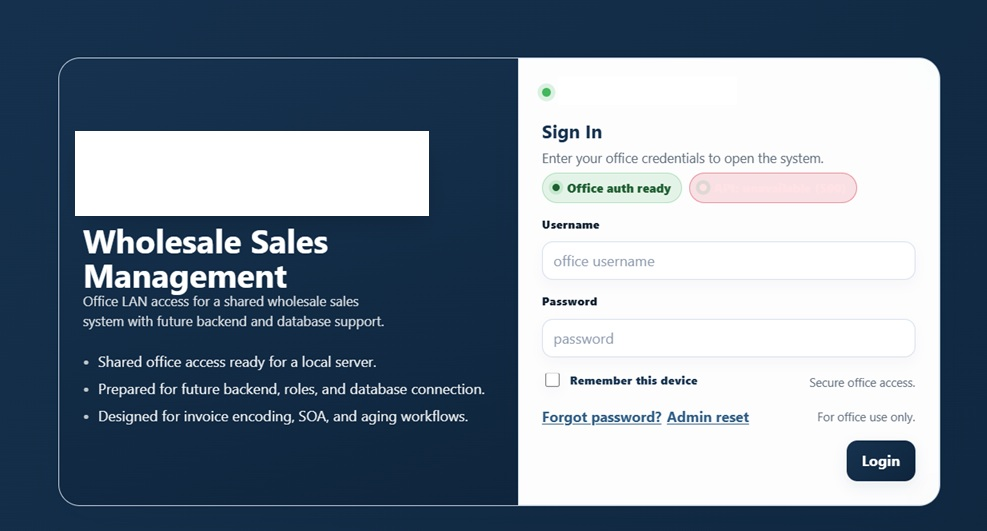
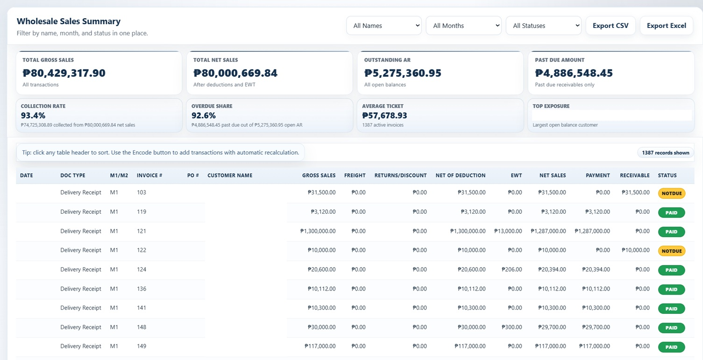
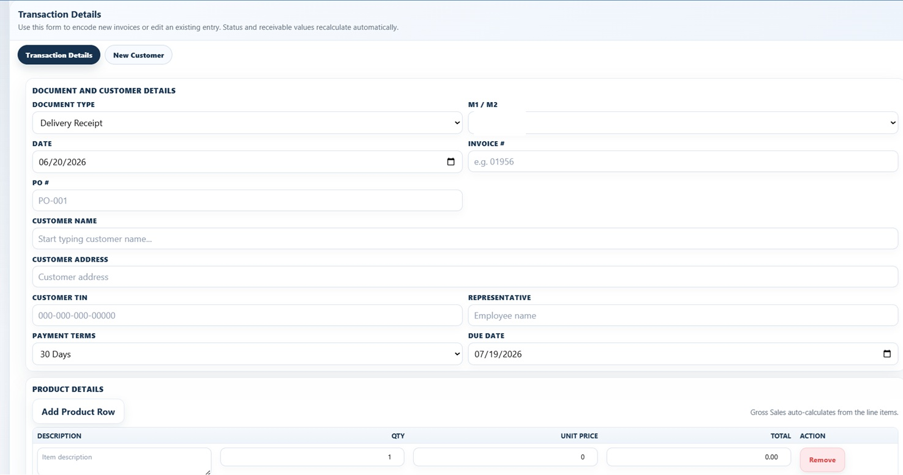
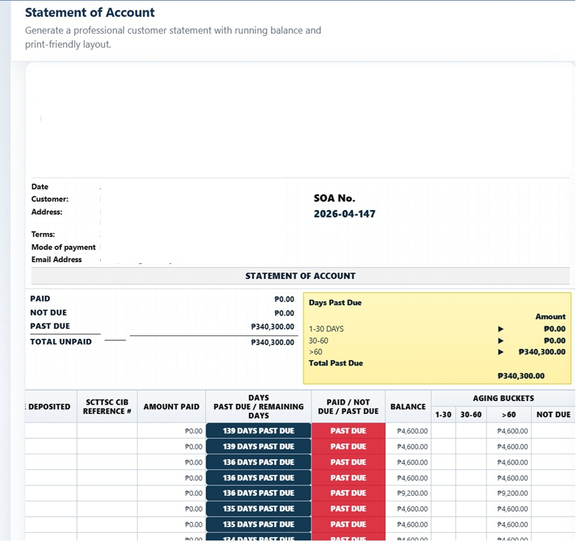
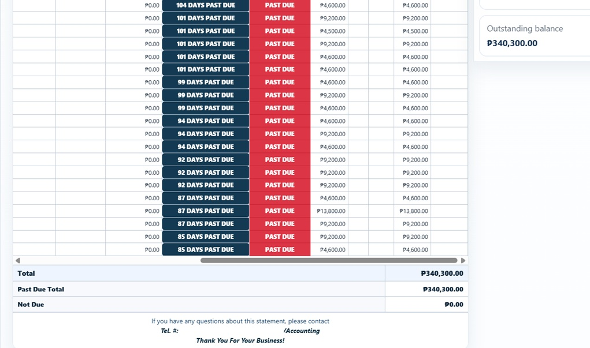
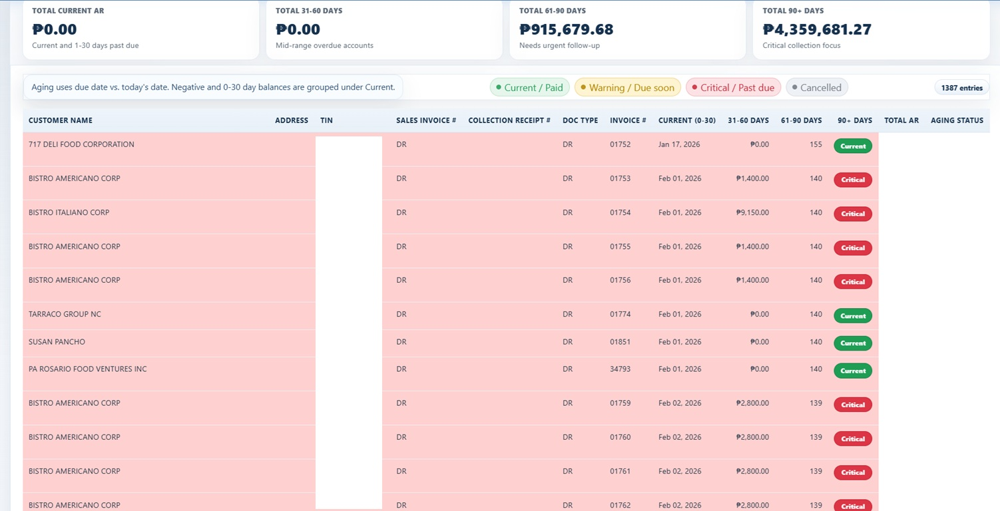

System Interface







Built with Kimi 2.7, Mimo 2.5, and Claude — a receivables dashboard for aging review, customer balances, payment status, and reporting visibility.
The finance team spent hours manually pivoting Excel exports to track aging buckets and outstanding receivables. This manual process was prone to delays and errors.
The SolutionBuilt a receivables dashboard using Kimi 2.7, Mimo 2.5, and Claude for dashboard structure, UI flow, data organization, and presentation logic. Ingests raw Excel exports, auto-buckets by aging, surfaces SOA detail live, and eliminates manual pivoting.
Real-time receivables visibility — eliminated manual reporting cycles, reducing review effort and making receivables easier to monitor for decision-making.





